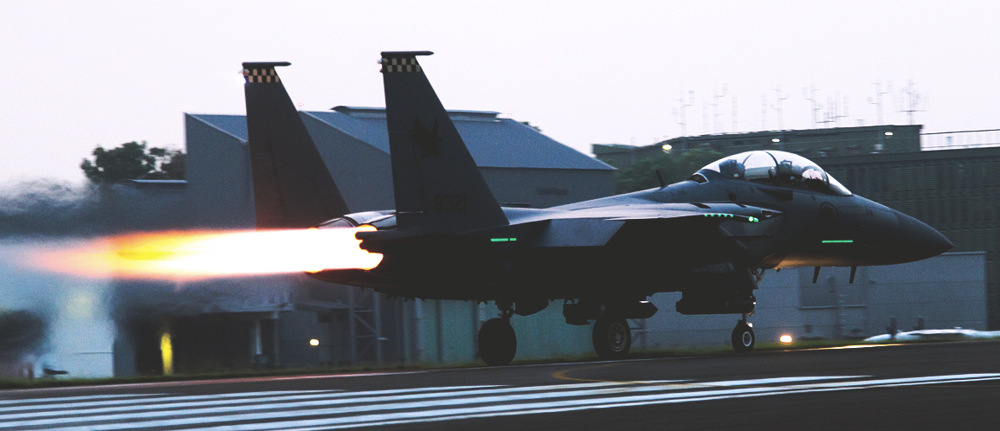
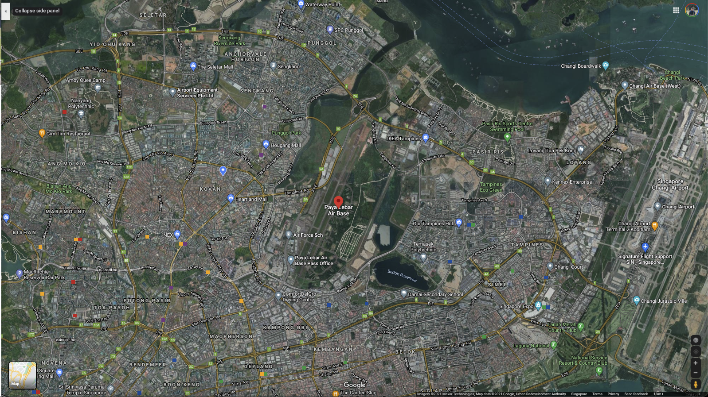
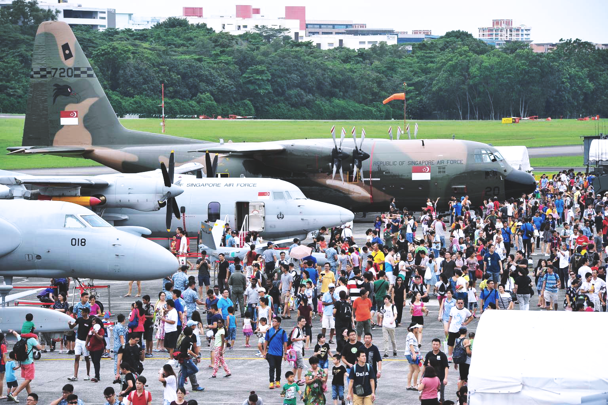
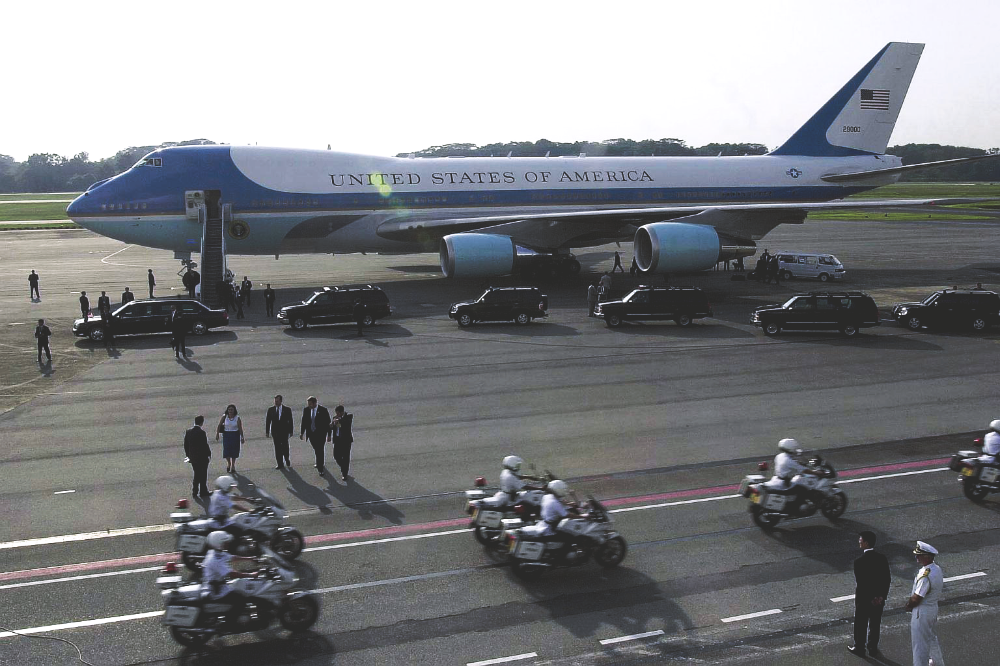
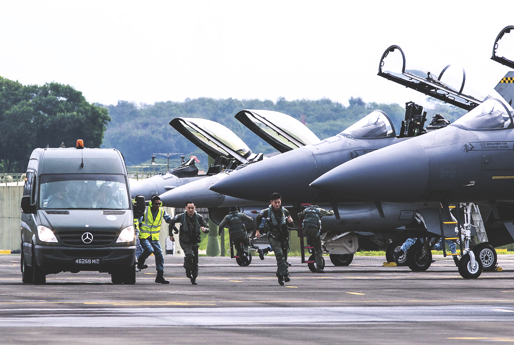
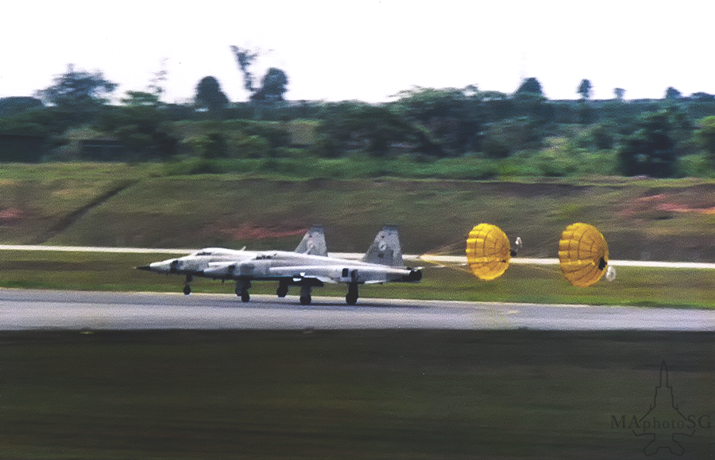
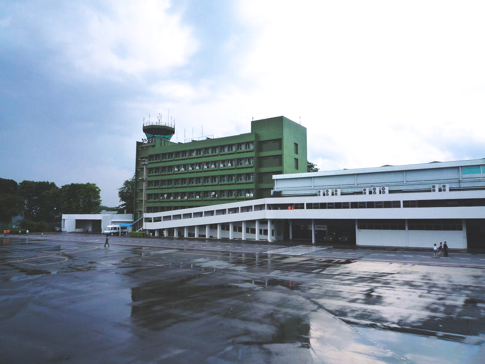
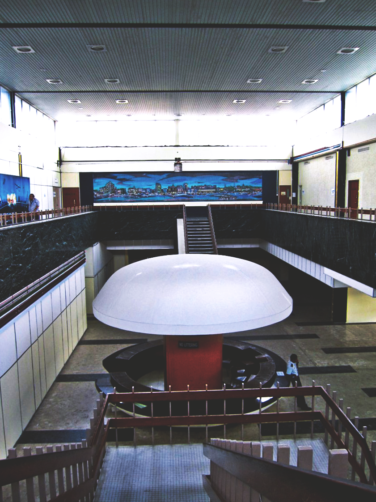

Imagining The Airbase

This is a photograph of an RSAF F15 taking off on the PLAB runway. As civilians, we are unable to access this location, unless on special events such as RSAF open houses. This page is a list of curated photographs of PLAB in present times sourcing from both primary and secondary sources. Within the secondary resource list, we are limited by what we can find online and in various databases on photographs that have been approved to be posted and archived. With this alone, we receive asymmetric information about the location. However, within the primary resource list are photographs of the airbase taken from a distance. My goal is to push the boundary of what is allowed to be photographed, and the limit of one's own vision the military imposes on us, the outsider.

This is a screenshot I took of a satellite view of Paya Lebar Airbase. You can click “Map” under the navigation above to view the location landmark on Google Maps.

Secondary Source: The Republic Of Singapore Airforce (RSAF) open house in 2016 situated at Paya Lebar Airbase.

Secondary Source: Landing of the Airforce One during the Donald Trump and Kim Jong Un summit in 2018.

Secondary Source: RSAF Pilot exercise on PLAB runway.

Secondary Source: Pair of Northrop F-5E Tiger IIs land with brakechutes deployed, RSAF Open House, Paya Lebar Airbase, June 1986.

Secondary Source: The structure of the Paya Lebar Airbase rooftop gallery still remains the same till this day.

Secondary Source: Interior of the old terminal

Secondary Source: The "Mushroom Counter" within the old terminal

Primary Source: Two photographs taken on top of a building just peeking over the runway.

Primary Source: Spotting of an F15SG jets about to land